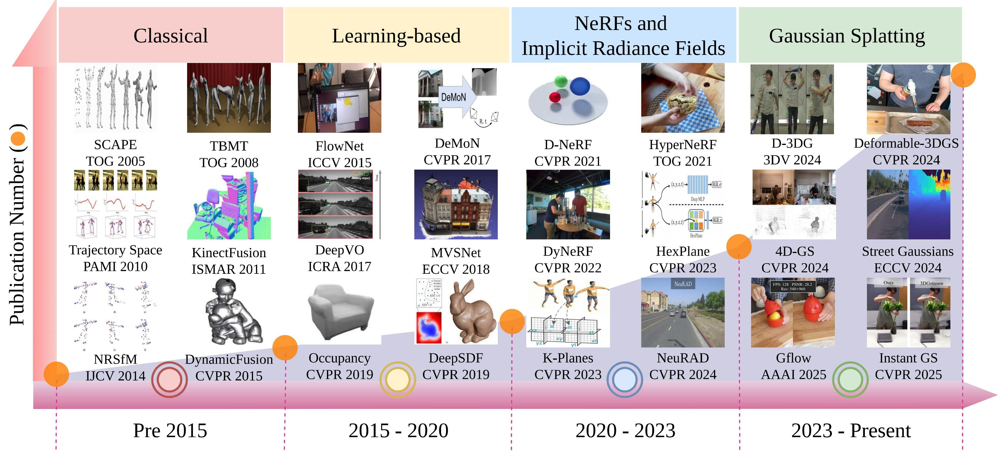
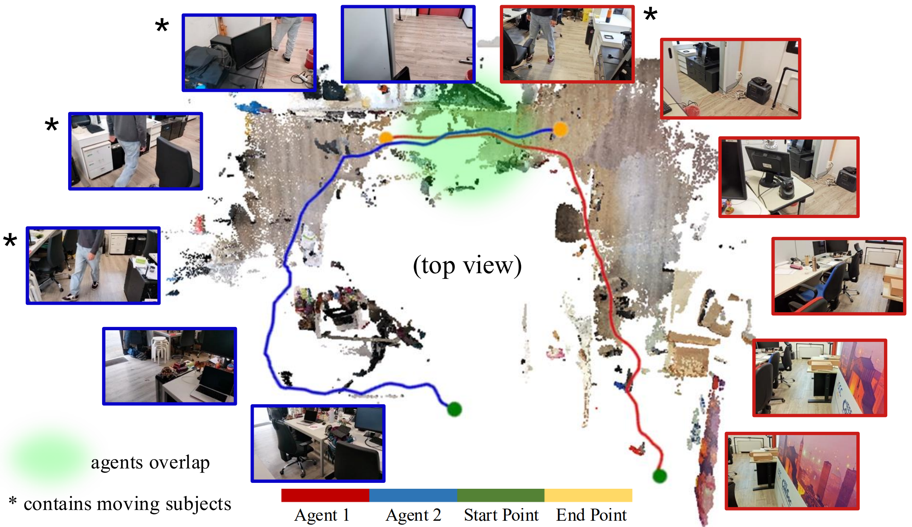
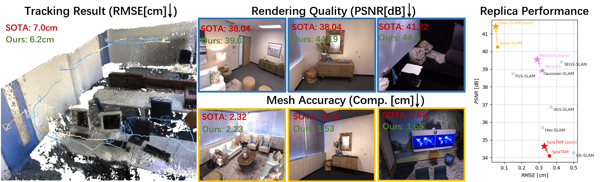
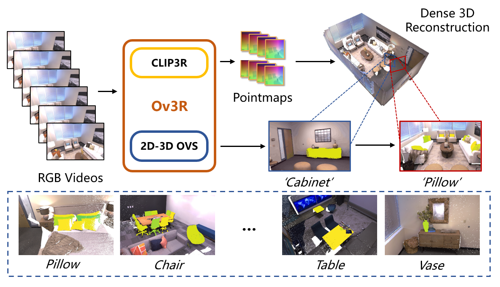
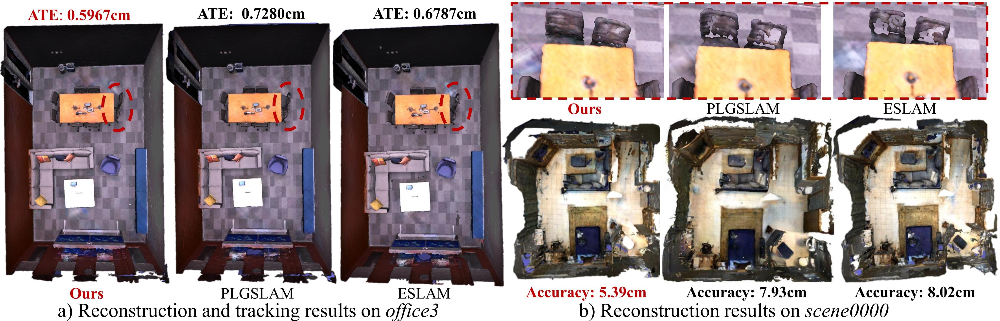

Hi! I'm Zoran Gong, also publishing as Ziren Gong. I am currently a Ph.D. student in the EIT4SEMM programme at the University of Bologna, Italy, co-supervised by Prof. Stefano Mattoccia and Prof. Matteo Poggi.
Before joining the University of Bologna, I received my Master's degree from Beihang University. My research interests include spatial AI, computer vision, 3D reconstruction, visual SLAM, human activity understanding, and multimodal learning. I also serve as a reviewer for IEEE TRO, IJCV, CVPR, NeurIPS, ICCV, ECCV, and related venues.
News
- 2026.06: One paper accepted by ECCV 2026: MAGiSt3R.
- 2026.06: One paper accepted by ECCV 2026: DINO-SLAM.
- 2026.06: One paper is available on OpenReview: 4D Dynamic Scene Reconstruction: A Comprehensive Survey.
- 2026.05: Selected as a CVPR 2026 Outstanding Reviewer (Top 5%).
- 2026.02: One paper accepted as a CVPR 2026 Highlight (Top 10%): Ov3R.
- 2026.02: One paper accepted by IEEE TRO: How NeRFs and 3D Gaussian Splatting are Reshaping SLAM.
- 2025.02: One paper accepted by ICRA 2025: HS-SLAM.
- 2023.09: One co-first author paper accepted by NeurIPS 2024: ProBio.
Preprints

4D Dynamic Scene Reconstruction: A Comprehensive Survey
Ziren Gong, Guo Chen, Yongjia Li, Yihua Shao, Fabio Tosi, Stefano Mattoccia, Matteo Poggi, Hao Tang, Fei Ma, Shuyan Li, Ziyang Yan, Nicu Sebe, Ling Shao, Jianfei Cai, Qi Tian, Ming-Hsuan Yang
Publications

MAGiSt3R: Multi-Agent Feed-forward 3D Reconstruction from Monocular RGB Videos
Ziren Gong, Xiaohan Li, Fabio Tosi, Ninghui Xu, Stefano Mattoccia, Jianfei Cai, Matteo Poggi



HS-SLAM: Hybrid Representation with Structural Supervision for Improved Dense SLAM
Ziren Gong, Fabio Tosi, Youmin Zhang, Stefano Mattoccia, Matteo Poggi
IEEE TRO
How NeRFs and 3D Gaussian Splatting are Reshaping SLAM: a Survey,
Fabio Tosi, Youmin Zhang, Ziren Gong, Stefano Mattoccia, Martin R Oswald, Erik Sandstrom, Matteo Poggi
NeurIPS 2024
ProBio: A Protocol-guided Multimodal Dataset for Molecular Biology Lab,
Jieming Cui^, Ziren Gong^, Baoxiong Jia^, Siyuan Huang, Zilong Zheng, Jianzhu Ma, Yixin Zhu
IEEE Sensors Journal
FecNet: A feature enhancement and cascade network for object detection using roadside LiDAR,
Ziren Gong, Zhangyu Wang, Guizhen Yu, Wentao Liu, Songyue Yang, Bin Zhou
SAE
Pedestrian Detection using roadside Lidar,
Ziren Gong, Zhangyu Wang, Bin Zhou, Wentao Liu, Pengfei Liu
Education and Internship
- Ph.D. in Computer Science, University of Bologna, Italy.
- Research Intern, CoRe Lab, Peking University, China.
- Perception Algorithm Intern, Beijing Tage IDriver Technology Co., China.
- M.Sc. in Traffic Information Engineering and Control, Beihang University, China.
- B.Eng. in Traffic Engineering, Wuhan University of Technology, China.